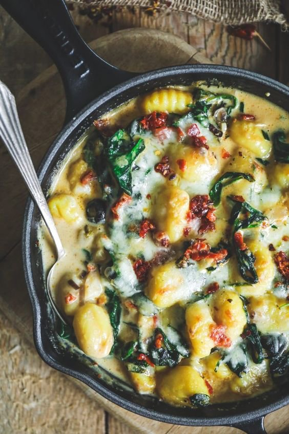

Gnocchis aux épinards et tomates confites
Ingredients
3×
- 1 oignon
- 2 gousses d'ail
- huile d'olive
- 600 g de gnocchis
- 150 g de pousses d'épinards
- 20 ml de bouillon de veau
- 20 cl de crème
- 100 g de parmesan
- 50 g d'olives noires dénoyautées
- 3 c. à s. de tomates confites
- piment d'Espelette
- 100 g de mozzarella râpée

Préparation
Étape 1
Émincer 1 oignon et 2 gousses d'ail, puis les rissoler dans un filet d’huile d'olive.
Étape 2
Ajouter 600 g de gnocchis et 150 g de pousses d'épinards, et cuire 3min en mélangeant.
Étape 3
Verser 20 ml de bouillon de veau et 20 cl de crème. Ajouter 100 g de parmesan, 50 g d'olives noires dénoyautées et 3 c. à s. de tomates confites. Saupoudrer de piment d'Espelette, mélanger et cuire encore 3min.
Étape 4
Parsemer de 100 g de mozzarella râpée et gratiner 10min à 220ºC.